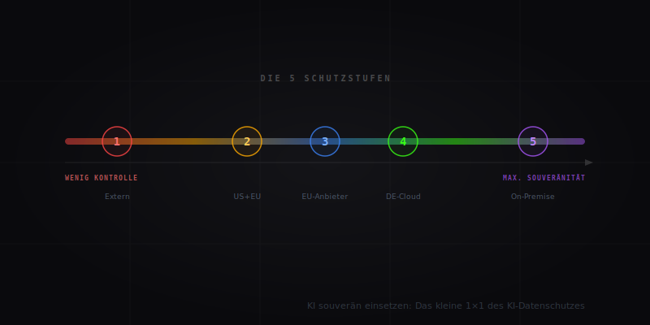
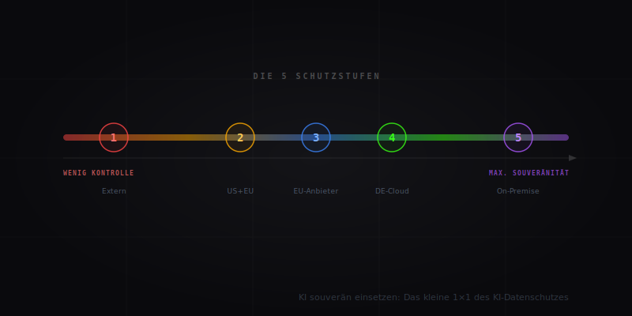
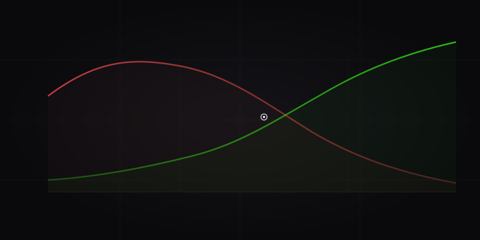
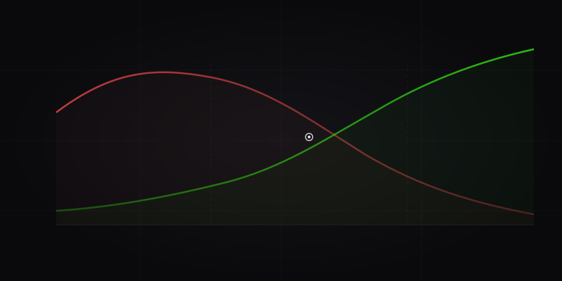

 

scale² Blog
KI-Wissen.
Klar. Praxisnah. Umsetzbar.
Praxisnahe Artikel über KI-Automatisierung, Strategie und Infrastruktur. Geschrieben für Unternehmer, die Ergebnisse wollen – klar und ohne Verkomplizierung.